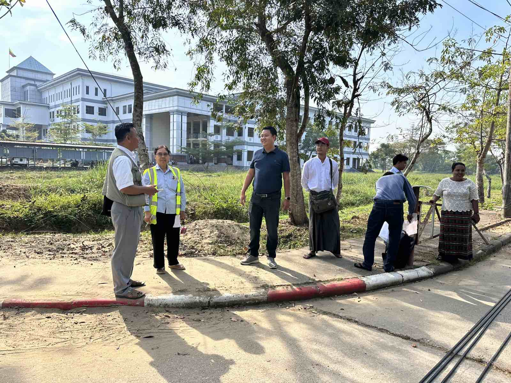

01 Electrical engineering
High-Tension Cable Installation
University, Hlaing Tharyar
- Location
- Hlaing Tharyar, Yangon
- Project period
- 2023–2024
- Status
- Completed
High-tension cable installation for the university project in Hlaing Tharyar.

OUR EXPERIENCE
A selection of completed work showing SWAM YEE's project experience.
COMPLETED WORK
Explore our completed electrical, fire fighting, water supply, renovation and laboratory construction projects. Select any photo for a closer look.
01 Electrical engineering
University, Hlaing Tharyar
High-tension cable installation for the university project in Hlaing Tharyar.
02 Fire protection
ကံကောင်းခြင်းရတနာအထပ်သားစက်ရုံ
Installation of a fire fighting system at the plywood factory in Thanbyuzayat.
PROJECT PHOTOS
04 photos03 Water infrastructure
1,500-acre project area
Water supply works for the TGC project, covering an area of 1,500 acres in Taunggyi.
PROJECT PHOTOS
09 photos04 Fire protection
Sira Town Thai Rubber Factory
Installation of a fire fighting system for the Sira Town rubber factory in Mudon.
PROJECT PHOTOS
05 photos05 Renovation & civil works
Hpa-An University
Major renovation works, including football field improvements and running track surfacing.
PROJECT PHOTOS
04 photos06 Laboratory construction
ကျောက်ဆည် သိပ္ပံနှင့်နည်းပညာကျောင်း
Construction of a Biosafety Level 2 laboratory room at the science and technology school in Kyaukse.
PROJECT PHOTOS
03 photosDISCUSS A PROJECT